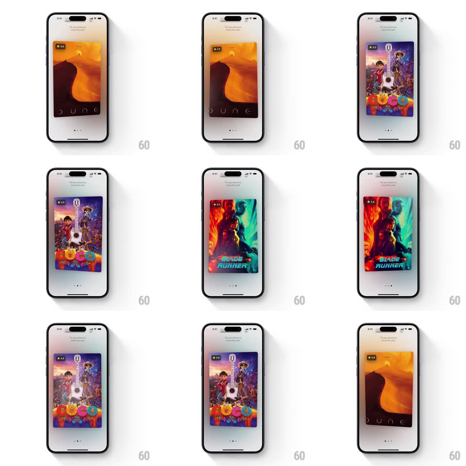

Media
Frame-by-frame

Rebuild this interaction 1:1: Play's spatial card carousel - movie poster cards (DUNE, COCO, BLADE RUNNER 2049) tilt in 3D with the phone's gyroscope, poster layers shifting in parallax, and horizontal swipes slide between cards with adjacent cards peeking in.

Rebuild this interaction 1:1: Play's spatial card carousel - movie poster cards (DUNE, COCO, BLADE RUNNER 2049) tilt in 3D with the phone's gyroscope, poster layers shifting in parallax, and horizontal swipes slide between cards with adjacent cards peeking in. ## Integration Integration: stack-agnostic spec - springs given as stiffness/damping, timed motions as duration + curve; map every value to your framework and animation library of choice. ## Scene A light gallery page with a single centered poster card (rounded corners, rating badge "4.8" top-left, title treatment at the bottom), "Do you gesture? Keep the app!" microcopy at top, and page dots below. Neighboring cards peek from the edges during swipes. ## Motion spec Pattern: gyroscope parallax + swipe carousel. - Gyroscope: tilting the phone rotates the card in 3D (rotateX/rotateY up to +/-8deg, mapped 1:1 with low-pass smoothing ~100ms) while the poster's internal layers shift in counter-parallax (artwork moves 6px opposite the tilt, rating badge and title move 10px with it - depth between layers). - The card casts a soft shadow that shifts opposite the tilt direction. - Swipe horizontally: the current card slides and scales down slightly (scale 0.95) as the next card slides in from the edge and scales up to 1 - both cards live during the transition (300ms, ease-out), with the incoming card's tilt already live. - Release mid-swipe: the card springs back to center (spring ~350/22, 350ms). - The page dots update on settle (active dot fills, 200ms). ## Calibration - Gyro range is clamped small (+/-8deg) - a sense of physicality, not a toy. - When the phone returns level, the card eases back to flat over ~400ms, never snapping. ## Reduced motion No gyro response; swipe carousel only. ## Don't miss - The parallax is inside the card - artwork, badge, and title sit on separate depth planes. - During swipes both cards keep responding to the gyro - the effect never pauses.